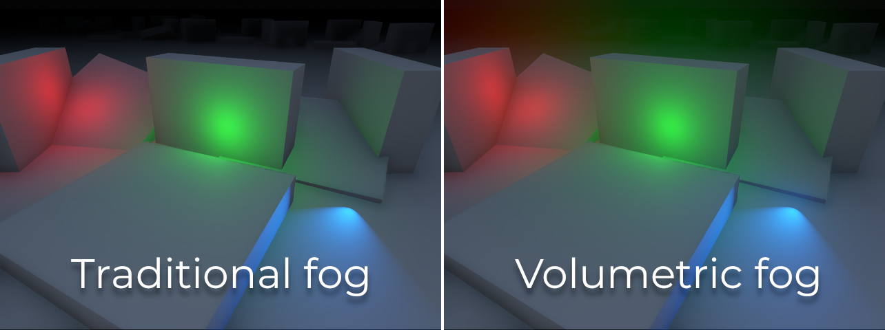
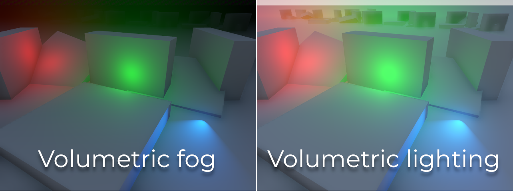
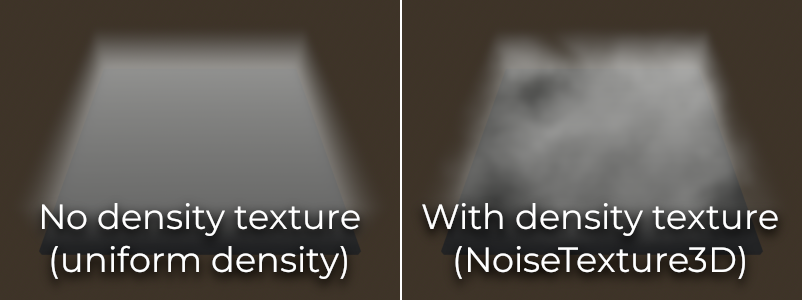
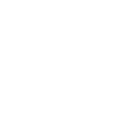

Sương mù thể tích và fog volume
Ghi chú
Sương mù thể tích chỉ được hỗ trợ trong renderer Forward+, không có trong renderer Mobile hay Compatibility.
Như đã mô tả trong Môi trường và hậu xử lý, Godot hỗ trợ nhiều hiệu ứng hình ảnh, bao gồm hai loại sương mù: sương mù truyền thống (không thể tích) và sương mù thể tích. Sương mù truyền thống tác động lên toàn bộ scene cùng lúc và không thể tùy biến bằng Fog shader.
Nếu muốn, bạn có thể dùng sương mù thể tích cùng lúc với sương mù không thể tích.
Trong trang này, bạn sẽ học:
Cách thiết lập sương mù thể tích trong Godot.
Fog volume là gì và chúng khác sương mù thể tích "toàn cục" như thế nào.
Xem thêm
Bạn có thể xem sương mù thể tích hoạt động thực tế bằng dự án demo Volumetric Fog.
Dưới đây là so sánh giữa sương mù truyền thống (không tương tác với ánh sáng) và sương mù thể tích, loại có thể tương tác với ánh sáng:

Các thuộc tính sương mù thể tích
Sau khi bật sương mù thể tích trong resource Environment của node WorldEnvironment, bạn có thể chỉnh sửa các thuộc tính sau:
Density: Mật độ hàm mũ cơ sở của sương mù thể tích. Đặt giá trị này bằng mật độ thấp nhất bạn muốn có trên toàn cục. FogVolume có thể được dùng để tăng thêm hoặc trừ bớt mật độ này ở những khu vực cụ thể. Giá trị
0.0sẽ tắt sương mù thể tích toàn cục nhưng vẫn cho phép FogVolume hiển thị sương mù thể tích ở những khu vực cụ thể. Việc kết xuất sương mù mang tính hàm mũ như ngoài đời thực.Albedo: Color của sương mù thể tích khi tương tác với ánh sáng. Màn sương và sương mù có albedo gần với màu trắng (
Color(1, 1, 1, 1)), còn khói có albedo tối hơn.Emission: Ánh sáng phát ra từ sương mù thể tích. Kể cả khi có emission, sương mù thể tích cũng không chiếu sáng lên các bề mặt khác. Emission hữu ích để tạo màu môi trường (ambient). Vì hiệu ứng sương mù thể tích chỉ dùng tán xạ đơn (single-scattering), sương mù thường cần một chút emission để làm dịu các bóng đổ gắt.
Emission Energy: Độ sáng của ánh sáng phát ra từ sương mù thể tích.
GI Inject: Điều chỉnh cường độ Global Illumination dùng trong màu albedo của sương mù thể tích. Giá trị
0.0nghĩa là Global Illumination sẽ không ảnh hưởng đến sương mù thể tích. Có một chút chi phí hiệu năng khi đặt giá trị lớn hơn0.0.Anisotropy: Hướng tán xạ của ánh sáng khi đi qua sương mù thể tích. Giá trị gần
1.0nghĩa là gần như toàn bộ ánh sáng bị tán xạ về phía trước. Giá trị gần0.0nghĩa là ánh sáng bị tán xạ đều theo mọi hướng. Giá trị gần-1.0nghĩa là ánh sáng bị tán xạ chủ yếu về phía sau. Sương mù và màn sương tán xạ ánh sáng hơi về phía trước, còn khói tán xạ ánh sáng đều theo mọi hướng.Length: Khoảng cách mà sương mù thể tích được tính toán. Tăng lên để tính sương mù trên phạm vi rộng hơn, giảm xuống để tăng chi tiết khi không cần phạm vi xa. Để sương mù có chất lượng tốt nhất, hãy giữ giá trị này thấp nhất có thể.
Detail Spread: Sự phân bố kích thước dọc theo chiều dài của bộ đệm froxel. Giá trị cao hơn sẽ nén các froxel lại gần camera hơn và dồn nhiều chi tiết hơn ở gần camera.
Ambient Inject: Điều chỉnh cường độ ánh sáng môi trường (ambient light) dùng trong sương mù thể tích. Giá trị
0.0nghĩa là ánh sáng môi trường sẽ không ảnh hưởng đến sương mù thể tích. Có một chút chi phí hiệu năng khi đặt giá trị lớn hơn0.0.Sky Affect: Điều khiển lượng sương mù thể tích được vẽ lên bầu trời nền. Nếu đặt thành
0.0, sương mù thể tích sẽ hoàn toàn không ảnh hưởng đến việc kết xuất bầu trời (kể cả FogVolume).
Hai thuộc tính bổ sung được cung cấp trong mục Temporal Reprojection:
Temporal Reprojection > Enabled: Bật temporal reprojection cho sương mù thể tích. Temporal reprojection trộn sương mù thể tích của frame hiện tại với sương mù thể tích của frame trước để làm mượt các cạnh răng cưa. Chi phí hiệu năng rất nhỏ, tuy nhiên nó khiến các FogVolume và Light3D đang di chuyển bị "bóng ma" (ghosting) và để lại vệt phía sau. Khi bật temporal reprojection, hãy cố tránh di chuyển FogVolume hoặc Light3D quá nhanh. Các hiệu ứng ánh sáng động tồn tại ngắn nên đặt Volumetric Fog Energy thành
0.0để tránh ghosting.Temporal Reprojection > Amount: Mức độ trộn frame trước với frame hiện tại. Giá trị cao hơn cho sương mù thể tích mượt hơn, nhưng làm hiện tượng "bóng ma" tệ hơn nhiều. Giá trị thấp hơn giảm ghosting nhưng có thể khiến hiện tượng rung (jitter) theo thời gian giữa các frame lộ ra.
Ghi chú
Khác với sương mù không thể tích, sương mù thể tích có phạm vi hữu hạn. Điều này có nghĩa là sương mù thể tích không thể bao phủ hoàn toàn một thế giới rộng lớn, vì đến một khoảng cách nào đó nó sẽ ngừng được kết xuất.
Nếu bạn muốn che các khu vực ở xa khỏi tầm nhìn của người chơi, nên bật cả sương mù không thể tích lẫn sương mù thể tích cùng lúc và điều chỉnh mật độ của chúng cho phù hợp.
Tương tác của ánh sáng với sương mù thể tích
Để mô phỏng hành vi tán xạ ánh sáng của sương mù ngoài đời thực, mọi loại đèn đều sẽ tương tác với sương mù thể tích. Mức độ mỗi đèn ảnh hưởng đến sương mù thể tích có thể được điều chỉnh bằng thuộc tính Volumetric Fog Energy trên từng đèn. Bật bóng đổ trên một đèn cũng sẽ làm các bóng đổ đó hiển thị trên sương mù thể tích.
Nếu không muốn sương mù tương tác với ánh sáng vì lý do nghệ thuật, bạn có thể tắt điều này trên toàn cục bằng cách đặt Volumetric Fog > Albedo thành màu đen tuyệt đối trong resource Environment. Bạn cũng có thể tắt tương tác ánh sáng với sương mù cho từng đèn cụ thể bằng cách đặt Volumetric Fog Energy của nó thành 0. Làm vậy cũng giúp cải thiện hiệu năng đôi chút vì loại đèn đó khỏi các phép tính sương mù thể tích.
Dùng sương mù thể tích làm giải pháp chiếu sáng thể tích
Tuy không chính xác về mặt vật lý, bạn có thể tinh chỉnh cài đặt sương mù thể tích để hoạt động như một giải pháp chiếu sáng thể tích. Điều này có nghĩa là những phần không được chiếu sáng của môi trường sẽ không còn bị sương mù làm tối đi, nhưng ánh sáng vẫn có thể làm sương mù sáng hơn ở những khu vực cụ thể.
Có thể làm điều này bằng cách đặt mật độ sương mù thể tích thành giá trị thấp nhất cho phép lớn hơn không (0.0001), rồi tăng thuộc tính Volumetric Fog Energy trên các đèn lên cao hơn nhiều so với mặc định để bù lại. Các giá trị từ 200.0 đến 5000.0 thường hoạt động tốt cho trường hợp này.

Cân bằng giữa hiệu năng và chất lượng
Có một số cài đặt dự án để điều chỉnh hiệu năng và chất lượng của sương mù thể tích:
Rendering > Environment > Volumetric Fog > Volume Size: Kích thước cơ sở dùng để xác định kích thước bộ đệm froxel theo trục X và trục Y của camera. Kích thước cuối cùng được điều chỉnh theo tỷ lệ khung hình của màn hình, nên giá trị thực tế có thể khác giá trị đã đặt. Đặt kích thước lớn hơn để sương mù chi tiết hơn, đặt kích thước nhỏ hơn để có hiệu năng tốt hơn.
Rendering > Environment > Volumetric Fog > Volume Depth: Số lát cắt dùng dọc theo chiều sâu của bộ đệm froxel cho sương mù thể tích. Số thấp hơn sẽ hiệu quả hơn, nhưng có thể gây ra lỗi hình ảnh (artifact) khi camera di chuyển.
Rendering > Environment > Volumetric Fog > Use Filter: Bật lọc hiệu ứng sương mù thể tích trước bước tích hợp. Việc này làm sương mù mờ đi đáng kể, làm giảm các chi tiết nhỏ, nhưng cũng làm mượt các cạnh gắt và lỗi răng cưa. Hãy tắt khi cần nhiều chi tiết hơn.
Ghi chú
Sương mù thể tích có thể gây ra hiện tượng phân dải màu (banding) trên viewport, đặc biệt ở mức mật độ cao. Xem Hiện tượng phân dải màu (color banding) để biết cách giảm banding.
Dùng fog volume cho sương mù thể tích cục bộ
Đôi khi bạn muốn sương mù chỉ giới hạn trong những khu vực cụ thể. Ngược lại, bạn có thể muốn có sương mù thể tích toàn cục nhưng loại trừ sương mù khỏi một số khu vực. Cả hai cách đều có thể thực hiện bằng các node FogVolume.
Dưới đây là hướng dẫn nhanh để dùng FogVolume:
Đảm bảo Volumetric Fog đã được bật trong các thuộc tính Environment. Nếu không muốn có sương mù thể tích toàn cục, hãy đặt Density của nó thành
0.0.Tạo một node FogVolume.
Gán một FogMaterial mới cho thuộc tính Material của node FogVolume.
Trong FogMaterial, đặt Density thành giá trị dương để tăng mật độ bên trong FogVolume, hoặc giá trị âm để trừ bớt mật độ khỏi sương mù thể tích toàn cục.
Cấu hình kích thước (extents) và hình dạng của FogVolume theo nhu cầu.
Ghi chú
Các fog volume mỏng có thể bị nhấp nháy khi camera di chuyển hoặc xoay. Có thể giảm hiện tượng này bằng cách tăng cài đặt dự án Rendering > Environment > Volumetric Fog > Volume Depth (đánh đổi hiệu năng) hoặc giảm Length trong các thuộc tính sương mù thể tích của Environment (không tốn hiệu năng, nhưng phải chịu phạm vi sương mù ngắn hơn). Ngoài ra, bạn có thể làm FogVolume dày hơn và dùng mật độ thấp hơn trong Material.
Các thuộc tính của FogVolume
Extents: Kích thước của FogVolume khi Shape là Ellipsoid, Cone, Cylinder hoặc Box. Nếu Shape là Cone hoặc Cylinder, hình nón/hình trụ sẽ được điều chỉnh để nằm vừa trong extents. Việc co giãn không đồng đều hình nón/hình trụ qua thuộc tính Extents không được hỗ trợ, nhưng bạn có thể co giãn node FogVolume thay thế.
Shape: Hình dạng của FogVolume. Có thể đặt thành Ellipsoid, Cone, Cylinder, Box hoặc World (hoạt động như sương mù thể tích toàn cục).
Material: Material được FogVolume sử dụng. Có thể là FogMaterial tích hợp sẵn hoặc một ShaderMaterial tùy chỉnh (Fog shader).
Sau khi chọn New FogMaterial trong thuộc tính Material, bạn có thể điều chỉnh các thuộc tính sau trong FogMaterial:
Density: Mật độ của FogVolume. Đối tượng đặc hơn sẽ đục hơn, nhưng có thể gặp lỗi hình ảnh do lấy mẫu thiếu (under-sampling) trông giống các vệt sọc. Có thể dùng giá trị âm để trừ bớt sương mù khỏi các FogVolume khác hoặc sương mù thể tích toàn cục.
Albedo: Color tán xạ đơn của FogVolume. Bên trong, albedo của thành viên được chuyển đổi thành tán xạ đơn, rồi được trộn cộng (additive) với các FogVolume khác và Albedo của sương mù thể tích toàn cục.
Emission: Color của ánh sáng do FogVolume phát ra. Ánh sáng phát ra sẽ không chiếu sáng hay đổ bóng lên các đối tượng khác, nhưng có thể hữu ích để điều chỉnh Color của FogVolume độc lập với các nguồn sáng.
Height Falloff: Tốc độ giảm mật độ của sương mù theo độ cao khi độ cao tăng trong không gian thế giới. Falloff cao sẽ tạo chuyển tiếp đột ngột, còn falloff thấp sẽ tạo chuyển tiếp mượt hơn. Giá trị
0.0cho sương mù có mật độ đồng đều. Ngưỡng độ cao được xác định bởi độ cao của FogVolume tương ứng.Edge Fade: Độ cứng của các cạnh FogVolume. Giá trị cao hơn sẽ cho cạnh mềm hơn, còn giá trị thấp hơn sẽ cho cạnh cứng hơn.
Density Texture: Texture 3D dùng để điều chỉnh mật độ thành viên của FogVolume. Có thể dùng để thay đổi mật độ sương mù bên trong FogVolume theo bất kỳ họa tiết tĩnh nào. Với các hiệu ứng động, hãy cân nhắc dùng fog shader tùy chỉnh. Bạn có thể import bất kỳ ảnh nào thành texture 3D bằng cách thay đổi kiểu import của nó trong Import dock.
Dùng texture mật độ nhiễu 3D
Từ Godot 4.1, có resource NoiseTexture3D có thể dùng để tạo nhiễu 3D theo thủ tục (procedural). Resource này rất phù hợp làm texture mật độ cho FogMaterial, giúp tạo hiệu ứng sương mù chi tiết hơn:

Ảnh chụp màn hình được chụp với cài đặt dự án Volume Size đặt thành 192 để chi tiết tần số cao trong sương mù hiện rõ hơn.
Để làm vậy, chọn thuộc tính Density Texture và chọn New NoiseTexture3D. Chỉnh sửa NoiseTexture3D này bằng cách nhấp vào nó, sau đó nhấp Noise ở cuối danh sách thuộc tính NoiseTexture3D và chọn New FastNoiseLite. Điều chỉnh chiều rộng, chiều cao và chiều sâu của texture nhiễu theo kích thước fog volume của bạn.
Để cải thiện hiệu năng, nên dùng kích thước texture nhỏ (64×64×64 hoặc nhỏ hơn), vì chi tiết tần số cao rất khó nhận thấy trong FogVolume. Nếu muốn thể hiện các biến thiên mật độ chi tiết hơn, bạn sẽ cần tăng Rendering > Environment > Volumetric Fog > Volume Size trong cài đặt dự án, điều này tốn hiệu năng.
Ghi chú
Color Ramp của NoiseTexture3D có ảnh hưởng đến texture mật độ của FogMaterial, nhưng vì chỉ kênh đỏ của texture được lấy mẫu, nên chỉ kênh đỏ của color ramp mới ảnh hưởng đến mật độ kết quả.
Tuy nhiên, dùng color ramp sẽ không nhuộm màu fog volume theo texture. Để làm được điều này, bạn cần dùng một shader tùy chỉnh đọc Texture3D.
Shader FogVolume tùy chỉnh
Trang này chỉ đề cập đến các cài đặt tích hợp sẵn của FogMaterial. Nếu bạn cần tùy biến hành vi sương mù bên trong một node FogVolume (chẳng hạn tạo sương mù chuyển động), giao diện của các node FogVolume có thể được tùy biến bằng Fog shader.
Giả lập sương mù thể tích bằng quad
Trong một số trường hợp, dùng các QuadMesh được cấu hình đặc biệt có thể là lựa chọn thay thế tốt hơn cho sương mù thể tích:
Quad hoạt động với mọi phương thức kết xuất, kể cả Mobile và Compatibility.
Quad không cần temporal reprojection để trông mượt mà, nên chúng phù hợp với các hiệu ứng động di chuyển nhanh như tia laser. Chúng cũng có thể thể hiện những chi tiết nhỏ mà sương mù thể tích không thể xử lý hiệu quả.
Quad thường có chi phí hiệu năng thấp hơn sương mù thể tích.
Tuy nhiên, cách tiếp cận này có một vài nhược điểm:
Hiệu ứng sương mù có độ suy giảm kém chân thực hơn, đặc biệt khi camera đi vào trong sương mù.
Có thể xảy ra vấn đề sắp xếp độ trong suốt khi các sprite chồng lên nhau.
Hiệu năng chưa chắc đã tốt hơn sương mù thể tích nếu có nhiều sprite ở gần camera.
Để tạo một sprite sương mù dựa trên QuadMesh:
Tạo một node MeshInstance3D với resource QuadMesh trong thuộc tính Mesh. Đặt kích thước theo ý muốn.
Tạo một StandardMaterial3D mới trong thuộc tính Material của mesh.
Trong StandardMaterial3D, đặt Shading > Shading Mode thành Unshaded, Billboard > Mode thành Enabled, bật Proximity Fade và đặt Distance Fade thành Pixel Alpha.
Đặt Albedo > Texture thành texture bên dưới (nhấp chuột phải và chọn Save as…):

Sau khi đặt texture albedo, vào Import dock, chọn texture và đổi chế độ nén của nó thành Lossless để cải thiện chất lượng.
Màu của sương mù được đặt bằng thuộc tính Albedo > Color; mật độ của nó được đặt bằng kênh alpha của màu đó. Để có kết quả tốt nhất, bạn sẽ phải điều chỉnh Proximity Fade > Distance và Distance Fade > Max Distance tùy theo kích thước QuadMesh của bạn.
Tùy chọn, có thể để tắt billboarding nếu bạn đặt quad sao cho tất cả các góc của nó đều nằm trong hình khối đặc. Điều này hữu ích để phủ sương mù lên các mặt phẳng lớn mà camera không thể đi vào, chẳng hạn như các hố sâu không đáy.